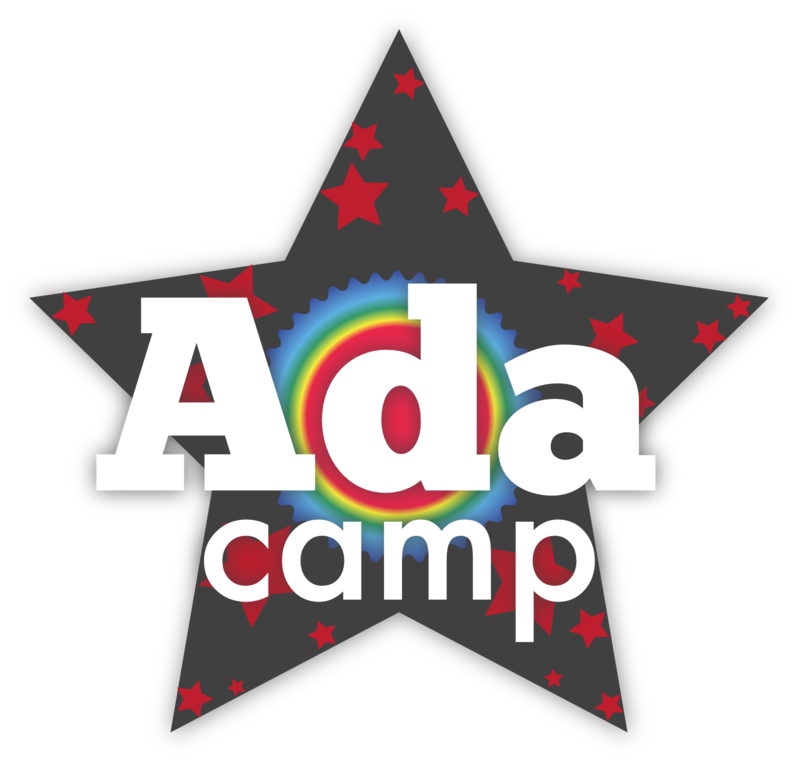
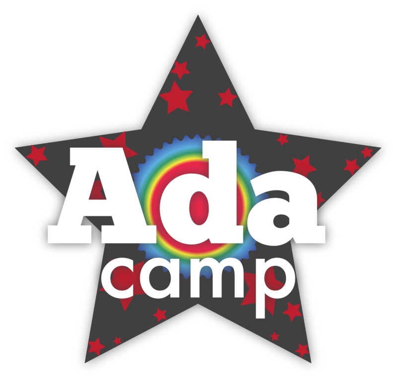

MORT & COMMEMORATION
Lovelace est décédée à l'âge de 36 ans le 27 novembre 1852, d'un cancer de l'utérus probablement exacerbé par la saignée par ses médecins. Elle a été enterrée, à sa demande, à côté son père à l'église de St. Mary Magdalene à Hucknall, Nottinghamshire. Une plaque commémorative en latin à elle et son père est dans la chapelle attachée à HorsleyTours.
Le langage informatique Ada, créé pour le compte du Département de la Défense des États-Unis, a été nommé en l'honneur de Lovelace. Le manuel de référence pour la langue était approuvé le 10 décembre 1980 et la norme militaire du ministère de la Défense pour la langue, MIL-STD-1815, a reçu le numéro de l'année de sa naissance.
Depuis 1998, la British Computer Society (BCS) a décerné la médaille Lovelace et, en 2008, a lancé un concours annuel pour les étudiantes.
BCSWomen parraine le Colloque Lovelace, une conférence annuelle pour les étudiantes de premier cycle.
Ada College est un collège de formation continue à Tottenham Hale, Londres qui se concentre sur les compétences numériques.
Ada Lovelace Day est un événement annuel célébré à la mi-octobre dont le but est de rehausser le profil des femmes en sciences, technologie, ingénierie et mathématiques, et «créer de nouveaux modèles pour les filles et les femmes» dans ces domaines.
L'Initiative Ada était une organisation à but non lucratif dédiée à accroître l'implication des femmes dans la culture libre et les mouvements open source.
Le bâtiment du Collège d'ingénierie en informatique et télécommunications de l'Université de Saragosse s'appelle le bâtiment Ada Byron.
Le centre informatique dans le village de Porlock, près de l'endroit où vivait Lovelace, porte son nom.
Ada Lovelace House est un bâtiment appartenant à un conseil à Kirkby-in-Ashfield, Nottinghamshire, près où Lovelace a passé son enfance; le bâtiment était autrefois un centre Internet.
Elle est aussi l'inspiration et l'influence de l'Ada Developers Academy à Seattle, Washington. L'académie est un but non lucratif qui cherche à augmenter la diversité dans la technologie en formant des femmes, des personnes trans et non binaires à devenir des ingénieurs en logiciel.
L'un des tunneliers excavant le projet Crossrail à Londres s'appelle Ada.
En 2018, le New York Times a publié une notice nécrologique tardive pour Ada Lovelace.
 


DEATH & COMMEMORATION
Lovelace died at the age of 36 on 27 November 1852, from uterine cancer probably exacerbated by bloodletting by her physicians.he was buried, at her request, next to her father at the Church of St. Mary Magdalene in Hucknall, Nottinghamshire. A memorial plaque in Latin to her and her father is in the chapel attached to Horsley Towers.
The computer language Ada, created on behalf of the United States Department of Defense, was named after Lovelace. The reference manual for the language was
approved on 10 December 1980 and the Department of Defense Military Standard for the language, MIL-STD-1815, was given the number of the year of her birth.
Since 1998 the British Computer Society (BCS) has awarded the Lovelace Medal, and in 2008 initiated an annual competition for women students.
BCSWomen sponsors the Lovelace Colloquium, an annual conference for women undergraduates.
Ada College is a further-education college in Tottenham Hale, London focused on digital skills.
Ada Lovelace Day is an annual event celebrated in mid-October whose goal is to raise the profile of women in science, technology, engineering, and maths,
and to "create new role models for girls and women" in these fields.
The Ada Initiative was a non-profit organisation dedicated to increasing the involvement of women in the free culture and open source movements.
The Engineering in Computer Science and Telecommunications College building in Zaragoza University is called the Ada Byron Building.
The computer centre in the village of Porlock, near where Lovelace lived, is named after her.
Ada Lovelace House is a council-owned building in Kirkby-in-Ashfield, Nottinghamshire, near where Lovelace spent her infancy; the building was once an internet centre.
She is also the inspiration and influence for the Ada Developers Academy in Seattle, Washington. The academy is a non-profit that seeks to increase diversity in tech by training women, trans and non-binary people to be software engineers.
One of the tunnel boring machines excavating London's Crossrail project is named Ada.
In 2018 the New York Times published a belated obituary for Ada Lovelace.